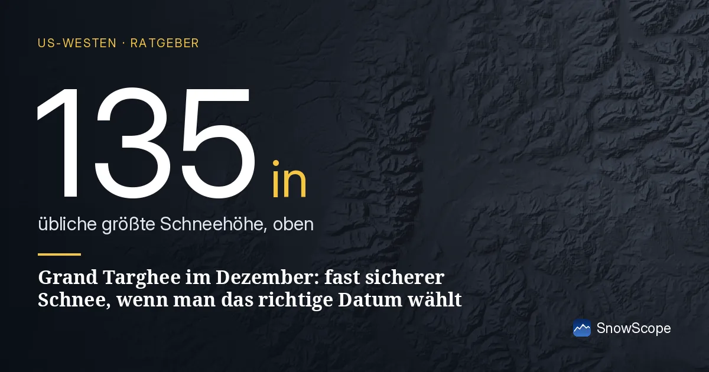

Grand Targhee im Dezember: fast sicherer Schnee, wenn man das richtige Datum wählt
Grand Targhees Lage in mittlerer Höhe garantiert fast jeden Winter tiefem Dezemberschnee: typischerweise 118 cm am 15. Dezember, und in jedem einzelnen der letzten 46 Winter wurden mindestens 50 cm erreicht. Die echte Frage für deinen Geldbeutel ist nicht, ob Schnee da sein wird, sondern welche Woche du buchst.
Die Live-Schneeprognose für Grand Targhee Resort in der SnowScope-AppSchneehöhen, Pulverschnee-Alarme und 3D-Karte, gratis.
Wie viel bis wann
In der Mittelhöhe, rund 2.658 m, rechne mit 81 cm am 1. Dezember, dann 118 cm bis zum 15., und 131 cm bis Weihnachten. Am Gipfel, nahe 3.000 m, erreicht es Mitte Dezember 179 cm. Selbst in einem schwachen Winter (einer von zehn) liegen in der Mittelhöhe am 15. noch 79 cm.
Anfang Dezember ist eine sichere Wette: 54% der Winter haben in der ersten Woche guten Schnee. In der zweiten Woche steigt das auf 76%, und die Wochen drei und vier erreichen 89% und 93%. Dauerhafter Schnee kommt normalerweise Anfang Oktober, die Basis ist also dick, wenn du ankommst.

Lifttickets im Blick
Einzelne Lifttickets online kosten je nach Datum zwischen 125 und 180 US-Dollar; an der Kasse zahlst du 10 Dollar mehr. Der Trick: Die Dezemberdaten vor den Feiertagen liegen am unteren Ende. Das Skigebiet öffnet am 20. November und berechnet Feiertagstarife vom 24. Dezember bis 3. Januar, wenn du Spitzenpreise zahlst.
Das lässt fast vier Wochen frühen bis mittleren Dezember zu besseren Tarifen. Mehrtages-Tickets werden pro Tag günstiger, je mehr du kaufst, also spreizst du die Kosten mit einem Drei- oder Vier-Tage-Trip. Die Rechnung spricht dafür, Anfang Dezember online zu buchen, wenn dein Zeitplan das erlaubt.

Vergleich mit der Umgebung
Snow King, Jacksons Hausberg, kostet ab 100 US-Dollar pro Tag, bringt aber in der Mittelhöhe am 15. Dezember durchschnittlich nur 71 cm, mit guten Schneeaussichten in nur 87% der Winter. Günstigerer Einstieg, dünnere Basis.
Jackson Hole Mountain Resort, das größte Gebiet im Tal, bringt in der Mittelhöhe am gleichen Datum durchschnittlich 93 cm. Das sind 23 cm weniger als Targhee in der gleichen Höhe. Beim Dezemberschnee schlägt Targhee beide.
Wo du übernachtest
Targhee liegt über Driggs auf der Idaho-Seite der Tetons. Die meisten Besucher logieren sich in Driggs ein (näher und ruhiger) oder Jackson (mehr Auswahl, aber über den Teton Pass). Der Pass ist steil und sperrt in Stürmen zu, also check die Bedingungen, bevor du fährst.
Wir haben Unterkunftskosten nicht verglichen, aber die Idaho-Seite hat tendenziell weniger, aber günstigere Optionen. Jackson bietet mehr Vielfalt in allen Preisklassen.
Ist der Schnee noch so zuverlässig wie früher
Größtenteils ja, aber mit leichtem Rückgang. In den Wintern 1980-81 bis 1994-95 lag die Mittelhöhe am 15. Dezember durchschnittlich bei 130 cm. In den letzten 15 Wintern fiel das auf 102 cm. Doch in beiden Perioden blieb jeder Winter über 50 cm.
Letzte Saison war schwach, kam mit nur 62 cm in der Mittelhöhe Mitte Dezember an. Das reicht zum Fahren präparierter Pisten, ist aber merklich dünner als die typischen 118 cm. Anfang Dezember diese Saison liegen gerade 5 cm, der Berg füllt sich also durch den Monat.
Was du mitnimmst
Dezember auf Targhee ist kalt und hochgelegen. Der Berggipfel sitzt auf 3.000 m und bekommt konstant Schnee. Pack Funktionswäsche, eine wasserdichte Jacke und Skibrille gegen Wind. Die oberen Hänge bleiben wegen Höhe und Gesamtakkumulation bis weit ins Frühjahr fahrbar.
Anfang Dezember können Schmelz-Frost-Zyklen auf südseitigen Hängen in der Mittelhöhe auftreten, wenn die Sonne stark scheint. Fahr höher oder nach Norden, wenn du konstanten Firn willst. Ab Mitte Dezember sperrt anhaltende Kälte die Basis.
Tipps für Skifahrer
- Buche deine Dezember-Termine Anfang des Monats online mindestens zwei Wochen voraus, um den niedrigeren Ticketpreis zu sichern; der Schalter kostet 10 Dollar mehr und hat weniger Sicherheit bei der Verfügbarkeit.
- Wenn du zwei oder mehr Tage planst, kauf ein Mehrtages-Ticket oder ein Pass: Der Tagespreis fällt deutlich gegenüber Einzeltageskarten.
- Fahr Anfang Dezember in Mittelhöhe oder höher, wenn die Basis dünn ist; die extra 150 m Höhe machen 38–50 cm Unterschied in Schneehöhe und Stabilität.
- Bevor du von Jackson aus fährst, check die Bedingungen am Teton Pass: Er sperrt in starkem Schneefall und Stürmen. Die Idaho-Seite ist steiler als du vielleicht erwartest.
- Lies die Lawinenbericht vom Bridger-Teton Avalanche Center, bevor du abseits der Pisten fährst, besonders an steilen Nordhängen, wo sich nach Neuschnee Bretter bilden können.
Zu diesen Zahlen
Die Schneehöhen der Skigebiete sind der meiste Schnee in den oberen Hängen am angegebenen Tag; es sind Schätzungen für eine Fläche, keine Messung an einem Punkt. Prognosen können sich ändern. Lies vor dem Freeriden immer den offiziellen Lawinenlagebericht.
Offizielle Lawinenlageberichte: Bridger-Teton Avalanche Center
Diesen Bericht zitieren
Für Forschung, Lehre oder Presse: Zahlen und Grafiken sind unter CC BY 4.0 mit dieser Quellenangabe frei nutzbar.
SnowScope (2026), Grand Targhee im Dezember: fast sicherer Schnee, wenn man das richtige Datum wählt, https://snowscope.app/blog/de/2026/11/grand-targhee-december-snow-and-ticket-prices.html, abgerufen am 2026-11-14
SnowScope (Atlas Labs). (2026, November 14). Grand Targhee im Dezember: fast sicherer Schnee, wenn man das richtige Datum wählt. SnowScope snow reports. https://snowscope.app/blog/de/2026/11/grand-targhee-december-snow-and-ticket-prices.html
BibTeX
@misc{snowscope2026grandtargheedecembersnow,
author = {{SnowScope (Atlas Labs)}},
title = {Grand Targhee im Dezember: fast sicherer Schnee, wenn man das richtige Datum wählt},
year = {2026},
month = nov,
howpublished = {\url{https://snowscope.app/blog/de/2026/11/grand-targhee-december-snow-and-ticket-prices.html}},
note = {Published 2026-11-14 13:57 UTC; accessed 2026-11-14}
}· CC BY 4.0 · Methoden, Daten und Werkzeuge →
Grand Targhee Resort: Schnee und Temperatur nach Höhe, dieser Winter vs letzter (Werkzeuge) →
Grand Targhee Resort folgen
Gratis: eine Nachricht, wenn Neuschnee kommt, und jeden Morgen die Vorhersage.